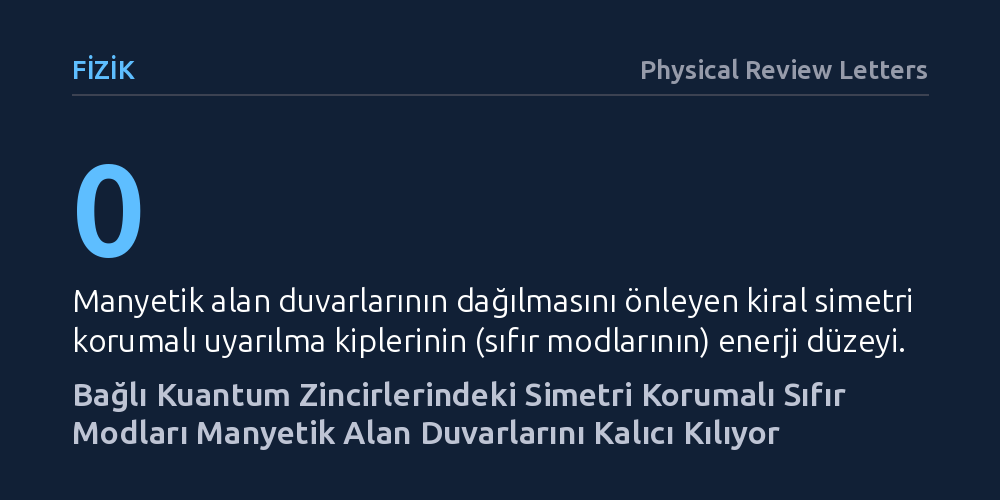

FIZIK · Physical Review Letters · 2026-10-18
Araştırmacılar, birbirine bağlı kuantum spin zincirlerinde manyetik düzenin zamanla neden kaybolmadığını inceledi. Kiral simetriyle korunan sıfır enerjili kuantum durumlarının, manyetik alan duvarlarını kararlı kılarak sistemin ısıl dengeye ulaşmasını kalıcı biçimde engellediği bulundu.
Kapalı bir kuantum sisteminin kaçınılmaz olarak ısıl dengeye ulaşıp ilk bilgisini unutacağı yönündeki genel kabulün, simetriyle korunan özel kuantum alt uzayları sayesinde kırılabileceğini gösteriyor.

Günlük deneyimlerimizden biliriz ki sıcak bir fincan kahve masada bırakıldığında zamanla oda sıcaklığına gelir; benzer şekilde kapalı fiziksel sistemler de genellikle tüm enerjilerini ve etkileşimlerini paylaştırarak ısıl dengeye, yani termalleşmeye yönelir. Kuantum fiziğinde de birbiriyle etkileşen parçacıklardan oluşan kapalı bir sistemin zaman içinde ilk halindeki bilgileri unutup homojen bir denge durumuna varması beklenir. Ancak bu termalleşme sürecinin hangi koşullarda aksayabileceği veya tamamen engellenebileceği, modern kuantum çok cisim fiziğinin en temel tartışma konularından biridir.
Eğer bir kuantum sistemi ısıl dengeye ulaşmayı reddederse, yani ergodik olmayan bir davranış sergilerse, içine yazılan kuantum bilgisini ve yerel manyetik düzenini çok uzun süreler boyunca saklayabilir. Bu durum, geleceğin kuantum teknolojileri ve kuantum bellekleri açısından hayati bir öneme sahiptir. Araştırmacılar, dışarıdan sürekli bir müdahale olmadan, yalnızca sistemin kendi iç simetrilerinden kaynaklanan mekanizmalarla manyetik yapıların sonsuza dek korunup korunamayacağı sorusuna odaklandı.
Çalışmada, kuantum manyetizmasını modellemek için yaygın olarak kullanılan XX spin modeli temel alındı. Tek bir spin zinciri yerine birbirine paralel bağlanan iki zincirli bir geometri tasarlandı. Bu modelde parçacıkların birbirleriyle olan kuantum etkileşimleri ve komşu zincirler arasındaki geçişler matematiksel olarak formüle edildi. Başlangıç durumu olarak, sistemin bir yarısının belirli bir manyetik yöne, diğer yarısının zıt yöne baktığı alan duvarı (domain-wall) yapısı seçildi.
Sistemdeki kuantum durumlarının zaman içindeki evrimini takip etmek için Lanczos algoritmasına dayanan yüksek hassasiyetli sayısal analizler yürütüldü. Araştırmacılar, zincir boyutunu ve parçacık sayısını adım adım büyüterek sonsuz büyüklükteki sistemlerin (termodinamik sınır) davranışını inceledi. Özellikle zincirler arasındaki bağ kuvvetinin değişken değerleri altında sistemin yerel manyetizasyon profilinin zamanla eriyip erimediği hesaplandı.
Elde edilen sonuçlar, bağlı zincirler arasındaki etkileşim kritik bir eşiği aştığında manyetik alan duvarlarının beklenenin aksine dağılmadığını gösterdi. Başlangıçta oluşturulan homojen olmayan manyetik profil, keyfi uzunluktaki süreler boyunca yapısını koruyarak sistemin ısıl dengeye ulaşmasını kalıcı olarak engelledi. Yapılan kuramsal çözümleme, bu sıradışı korumanın sistemin kiral simetrisi tarafından güvenceye alınan sıfır enerjili kuantum kiplerinden (sıfır modları) kaynaklandığını ortaya koydu.
Simülasyonlar ayrıca bu etkinin sınırlarını da belirledi: Sisteme kiral simetriyi bozan dışsal pertürbasyonlar veya başlangıç durumuna antiferromanyetik kusurlar eklendiğinde sistemin yavaş da olsa termalleşmeye geri döndüğü görüldü. Buna karşılık, kiral simetriyi koruyan etkiler altında bu koruyucu kalkanın son derece sağlam kaldığı ve termodinamik sınırda kararlı bir yerelleşme geçişinin gerçekleştiği kanıtlandı.
Yazarlar, elde edilen sonuçların "dejenere ve simetriyle korunan alt uzayların deneysel olarak erişilebilir kuantum sistemlerinde termodinamik açıdan kararlı ergodik olmayan dinamikler doğurabileceğini" gösterdiğini belirtmektedir. Bu bulgu, kuantum bilgi kaybının önlenmesi için karmaşık dış tuzaklara veya rastgele düzensizliklere her zaman ihtiyaç olmadığını; sistemin kendi iç simetrisinin de bilgiyi koruyan doğal bir zırh oluşturabileceğini kanıtlamaktadır.
Her ne kadar çalışma kuramsal ve sayısal bir modelleme niteliğinde olsa da, kullanılan bağlı spin zinciri yapısı günümüzün Rydberg atom dizilimleri veya optik örgülerde tutulan kutuplu moleküller gibi deney platformlarında hayata geçirilmeye oldukça uygundur. Gelecekte yapılacak laboratuvar deneyleri bu kuramsal tahmini doğruladığı takdirde, dağılmayan manyetik alan duvarları kuantum bellek hücrelerinin tasarımında yeni bir kapı aralayabilir.